Budgets, speed limits and safe weights are rarely fixed numbers - they're targets you solve for as a range. Today you learn to solve inequalities using the same steps as equations, with one crucial extra rule to watch for.
By the end you’ll know…
An inequality is solved like an equation, by applying inverse operations to both sides.
The answer is a range of values, written in inequality notation rather than as x = a single number.
The sign stays the same way round when adding, subtracting, multiplying or dividing by a positive number.
Multiplying or dividing both sides by a negative number reverses the sign.
A solution set can be shown on a number line, or listed as the integers it contains.
By the end you can
G4Solve one- and two-step inequalities, giving the answer in inequality notation.
G5Solve an inequality and represent its solution set on a number line, listing integer solutions where asked.
Work down the page at your own pace. Write every answer in your book first, then click to check it.
01
Do Now
About 5 minutes
1
What does it mean for an equation to stay "balanced" while you solve it?
Whatever is done to one side must also be done to the other side, so both sides stay equal at every step.
2
Which operation is the inverse of multiplying by 4?
Dividing by 4.
3
Solve 3x + 5 = 20.
x = 5.
4
Solve 2x - 7 = -1.
x = 3.
Remember these?
LAST LESSONList the integers satisfying −2 < n ≤ 1.
−1, 0, 1.
LAST WEEKA cyclist rides 90 km at 60 km/h. How long does the journey take, in hours and minutes?
90 ÷ 60 = 1.5 h = 1 hour 30 minutes
LAST TERMP(win) = 0.2. In 50 games, how many wins would you expect?
0.2 × 50 = 10.
LAST YEARExpand 4(x + 3).
4x + 12.
02
Learn
Read each card, then follow the worked examples one step at a time.
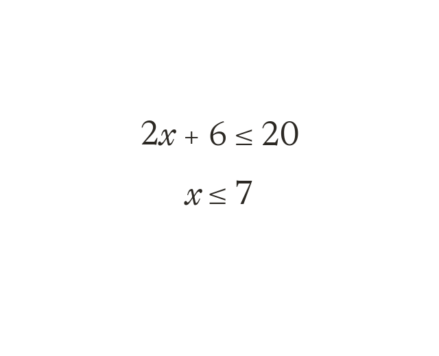
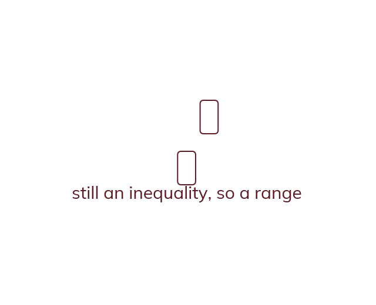
Solving like an equation
Solve an inequality like an equation: apply inverse operations to both sides. The result is a range, written with an inequality symbol, not 'x ='.
an inequality is solved the same way as an equation - apply inverse operations to both sides to isolate the unknown. The result is a range of values, written with an inequality symbol, not 'x ='.
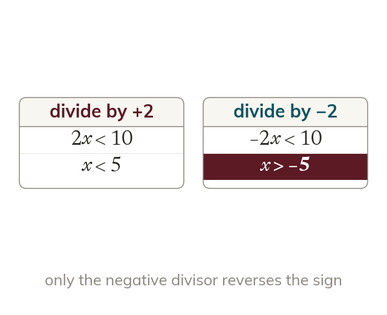
The sign-reversal rule
Adding, subtracting, multiplying or dividing by a positive keeps the sign. Multiplying or dividing both sides by a NEGATIVE reverses the sign. < becomes >, and vice versa.
the inequality sign stays the same way round when you add, subtract, multiply or divide both sides by a positive number. If you multiply or divide both sides by a NEGATIVE number, you must reverse the sign (< becomes >, and vice versa).
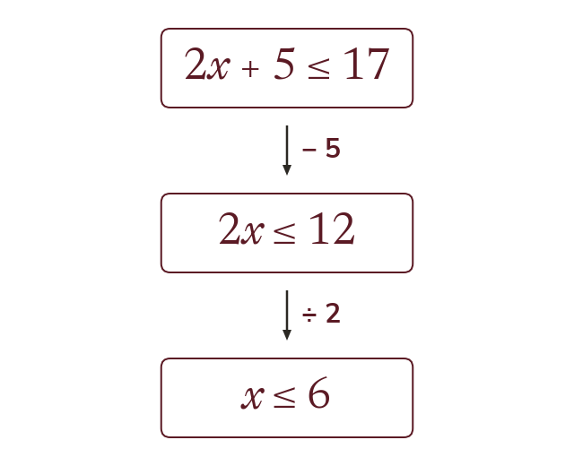
Two-step problems
Undo the operations in reverse order, exactly as with equations. Undo addition or subtraction first, then multiplication or division.
undo the operations in reverse of how they were applied - inverse of additionsubtraction first, then inverse of multiplicationdivision - exactly as with equations.
WORKED EXAMPLE A
Solve 3x + 2 < 14.
Modelsubtract 2 from both sides (undoes the +2): 3x < 12.
Divide both sides by 3, a positive number, so the sign stays the same: x < 4.
WORKED EXAMPLE B
Solve -4x + 3 ≤ 11.
Modelsubtract 3 from both sides (undoes the +3): -4x ≤ 8.
Divide both sides by -4, a negative number, so reverse the inequality sign: x ≥ -2.
YOUR TURN · a
Solve -2x < 10.
divide by -2 and REVERSE the sign, because -2 is negative: x > -5
YOUR TURN · b
Solve -3x - 1 ≥ 8 - a two-step problem with a negative coefficient, so check whether the sign needs to reverse.
add 1: -3x ≥ 9; divide by -3 and REVERSE the sign, because -3 is negative: x ≤ -3.
03
Check your understanding
Pick an answer. If it's wrong, the feedback tells you which mistake it was.
Solve 5x - 10 < 15.
Yes. Add 10: 5x < 25. Divide by 5: x < 5.
Not quite. The answer to an inequality is a range: x < 5.
Not quite. Dividing by a positive 5 keeps the sign the same way round.
Not quite. Add 10 first, then divide: 5x < 25, so x < 5.
Solve -6x ≥ 18.
Yes. Dividing by −6 reverses the sign: x ≤ −3.
Not quite. Dividing by a negative reverses the sign: ≥ becomes ≤.
Not quite. The answer is a range, not one value: x ≤ −3.
Not quite.18 ÷ −6 = −3, and the sign reverses: x ≤ −3.
When you multiply or divide both sides of an inequality by a negative number, what must you do to the sign?
Not quite. Multiplying or dividing by a negative reverses the sign.
Yes. A negative multiplier or divisor reverses the inequality sign.
Not quite. Only negatives reverse it. A positive keeps it the same.
Not quite. It stays an inequality. The sign just turns round.
04
Practise
mark as you go
Checkpoint. Solve 2 - 5x < 17. Show your working - I'll check it before you move on.Show your teacher before you go on
1
Solve x + 5 > 12
Subtract 5: x > 7
2
Solve 3x ≤ 18
Divide by 3: x ≤ 6
3
Solve 2x - 7 ≥ 5
Add 7: 2x ≥ 12 Divide by 2: x ≥ 6
4
Solve -3x < 12
Divide by -3, a negative: the sign reverses x > -4
5
Solve 10 - 2x ≥ 4
Subtract 10: -2x ≥ -6 Divide by -2, so reverse: x ≤ 3
EXT
Solve -x4 + 1 > 3
Subtract 1: -x4 > 2 Multiply by -4, so reverse: x < -8
05
Learn
Read each card, then follow the worked examples one step at a time.
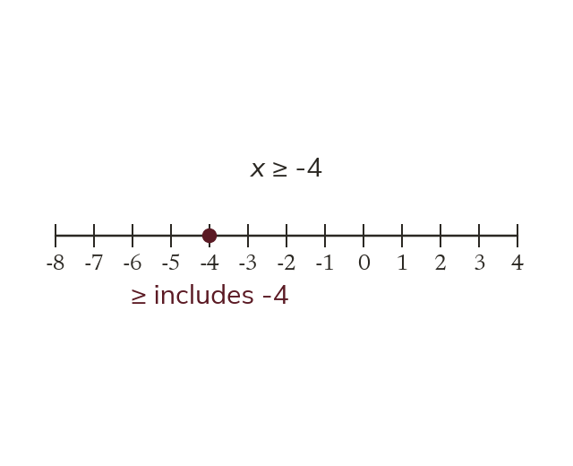
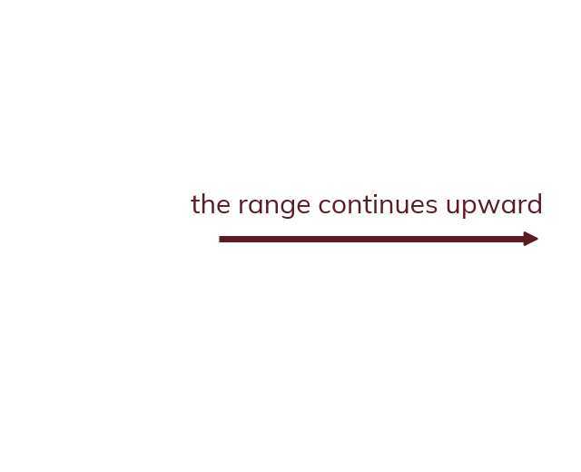
From solution to number line
Draw a solved inequality as before. The circle matches the symbol: open for < or >, filled for ≤ or ≥. The arrow shows the direction the range continues.
A solved inequality (e.g. x > 3) is drawn on a number line the same way as before: the circle matches the symbol (< or > = openexcluded, ≤ or ≥ = filledincluded), and the arrow shows the direction the range continues.
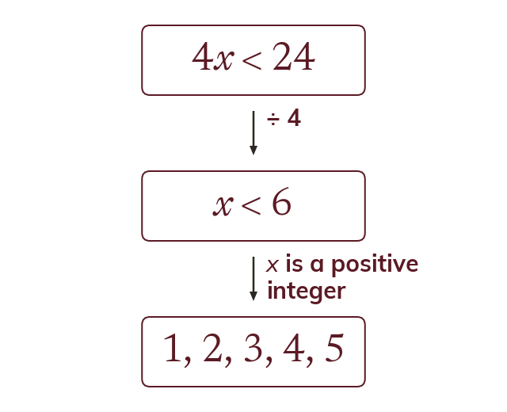
From solution to a list
To list integer solutions, solve fully, then check the boundary's own symbol. A one-directional range needs an added condition to make the list finite.
to list integer solutions, first solve the inequality fully, then check the boundary using its own symbol. If the solved range is one-directional, an added condition (e.g. 'x is a positive integer') is needed to make the list finite.
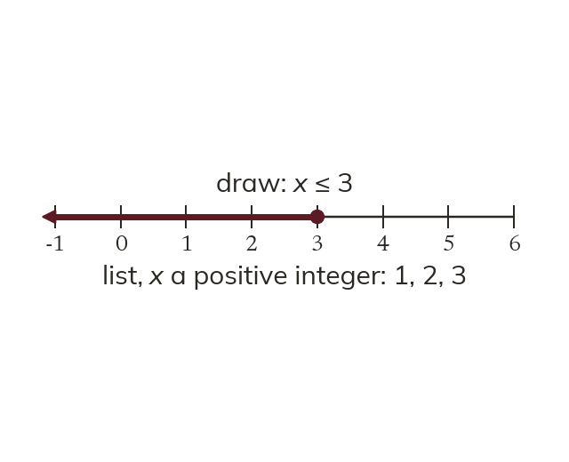
Choosing the right final step
Not every solved inequality needs both a number line and a list. Read what the question asks for and give exactly that.
not every solved inequality needs both a number line and a list - after solving, read what the question asks for (draw / list / both) and give exactly that.
WORKED EXAMPLE C
Solve 2x + 1 ≤ 9, then represent the solution on a number line. Model: subtract 1: 2x ≤ 8
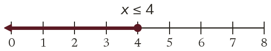
divide by 2, a positive number, sign unchangedx ≤ 4. Filled circle at 4 (≤, included), arrow pointing left.
WORKED EXAMPLE D
Solve 3x - 2 ≤ 10, given x is a positive integer, then list the integer solutions. Model: add 2: 3x ≤ 12
divide by 3, a positive number, sign unchangedx ≤ 4. Since x is a positive integer: x = 1, 2, 3, 4.
YOUR TURN · c
Solve 4x + 3 ≤ 15, then represent the solution on a number line.
subtract 3: 4x ≤ 12; divide by 4, sign unchanged: x ≤ 3. Filled circle at 3, arrow pointing left.
YOUR TURN · d
Solve -2x - 1 ≥ 5, then represent the solution set on a number line.
add 1: -2x ≥ 6; divide by -2 and reverse: x ≤ -3. On the line: filled circle at -3 with the arrow pointing left.
06
Check your understanding
Pick an answer. If it's wrong, the feedback tells you which mistake it was.
A student solves -2x > 6 and gets x < -3. How should this be shown on a number line?
Yes.x < −3: an open circle because −3 isn't included, and the arrow points left.
Not quite. < doesn't include −3, so the circle is open.
Not quite. The solution is x < −3, so the circle goes at −3 and the arrow points left.
Not quite. Show the range on a number line: open at −3, arrow left.
Solve 2x + 1 < 9, given that x is a positive integer, then list the solutions.
Yes.2x < 8, so x < 4: 1, 2, 3.
Not quite.x < 4 doesn't include 4.
Not quite. Subtract 1 first, then divide: 2x < 8, so x < 4.
Not quite. List every positive whole number below 4: 1, 2, 3.
A student solves -5x ≥ 15. What is the correct number-line representation of the solution?
Yes. Dividing by −5 reverses the sign: x ≤ −3, filled at −3, arrow left.
Not quite. Dividing by −5 reverses the sign, so the arrow points left.
Not quite. ≤ includes −3, so the circle is filled.
Not quite. Show the range: a filled circle at −3, arrow left.
07
Practise
mark as you go
Checkpoint. Solve 4x + 1 < 21, given that x is a positive integer. Represent the solution set on a number line AND list the integer solutions. Show your working - I'll check it before you move on.Show your teacher before you go on
1
Solve 3x + 2 < 14 and show the solution on a number line.
Subtract 2: 3x < 12, so x < 4
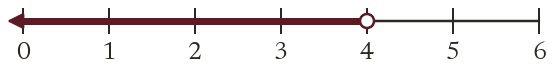
2
Solve 5x - 1 ≥ 9 and show the solution on a number line.
Add 1: 5x ≥ 10, so x ≥ 2
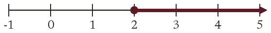
3
Solve 2x + 3 ≤ 11, where x is a positive integer. List the solutions.
2x ≤ 8, so x ≤ 4 1, 2, 3, 4
4
Solve -2x + 5 > 1, then list the solutions that are whole numbers from 0 upwards.
-2x > -4; divide by -2 and reverse: x < 2 0, 1
5
Solve 4 < 2x ≤ 10, and list the integer solutions.
Divide every part by 2: 2 < x ≤ 5 3, 4, 5
EXT
Solve -4 ≤ 3x + 2 < 11, and list the integer solutions.
Subtract 2: -6 ≤ 3x < 9; divide by 3: -2 ≤ x < 3 -2, -1, 0, 1, 2
08
Exit ticket
On paper, on your own, then check
1
What must you do to the inequality sign when you multiply or divide both sides by a negative number? Explain why this rule does not apply when multiplying or dividing by a positive number.
Reverse the inequality sign. A negative multiplierdivisor flips the order of values on the number line, whereas a positive one preserves it, so only the negative case needs the sign reversed.
2
Solve 5x - 3 > 12.
x > 3.
3
Solve -3x + 2 ≥ -13, given that x is a positive integer. Represent the solution set on a number line and list the integer solutions.
Finished? Next lesson: 8.2.4 Unknowns on Both Sides.
Practise more
After the lesson, or whenever you want more
Dr Frost
Log in, then search for a code to practise that skill.
339bSolve a linear inequality in one variable with two steps.
339fSolve a linear inequality in one variable where the coefficient of x is negative.
339hSolve and represent the solution of a one-ended linear inequality in one variable on a number line.